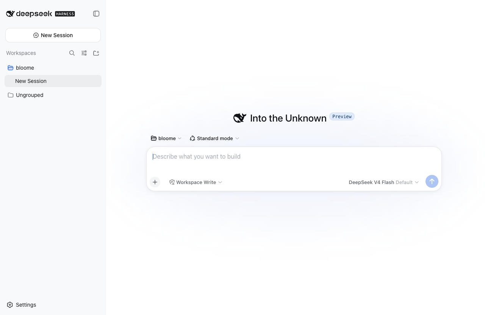

DSH Desk 用 Electron 薄壳启动官方 dsh web 运行时。零前端改动，所有会话、工作区、工具调用与审批交互 100% 原样保留。

不做任何前端改动。壳只负责拉起官方运行时和提供原生桌面外壳，其余交给 dsh。
启动官方 dsh web 运行时并加载原版 Web UI。会话、工作区、工具调用、审批、插件管理、模型配置，与浏览器版完全一致。
内置 Node 运行时与 dsh 完整依赖树。目标机器无需安装 Node，无需联网。
复用官方 $DSH_HOME（默认 ~/.dsh），与 CLI 无缝共享工作区、配置与会话。
独立窗口、原生菜单、单实例锁定、⌘⇧R 一键重启后端。异常退出时显示友好错误页。
contextIsolation + sandbox，无 nodeIntegration。外链走系统浏览器，仅回环地址监听，子进程禁用遥测。
官方就绪行 → stdout 兜底 → HTTP 轮询，对上游输出变化抗脆。npm run check:update 一键检测并升级到最新 npm 发布版。
Electron 主进程管理生命周期，dsh 运行时作为独立子进程提供完整后端能力。通信走官方 HTTP + WebSocket RPC 协议。
每个平台都是完全自包含的安装包，不依赖系统 Node 环境。
Universal（arm64 + x64），支持签名与公证。
.dmgNSIS 安装向导，可自选安装目录。
.exeAppImage，免安装，直接运行。
.AppImage开发模式需要系统 Node ≥ 22.19。打包模式完全自包含。